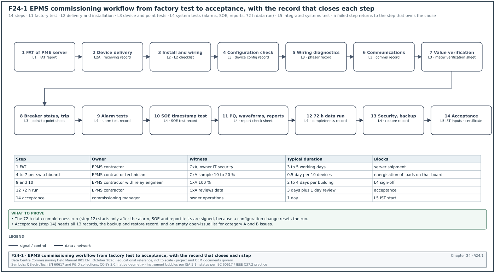
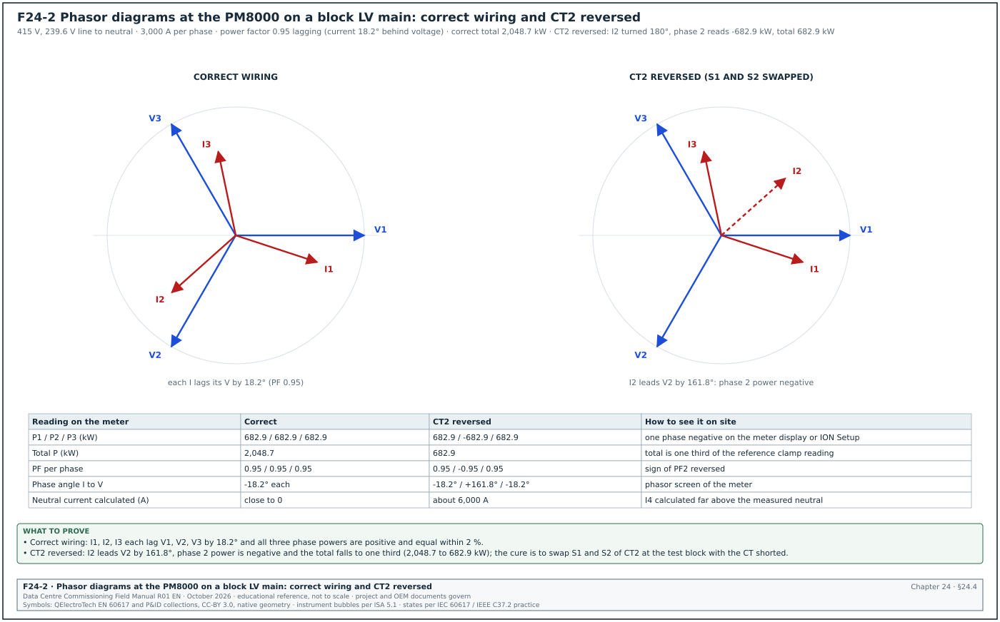
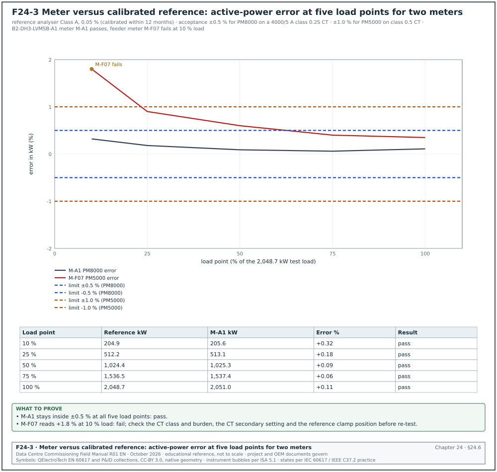
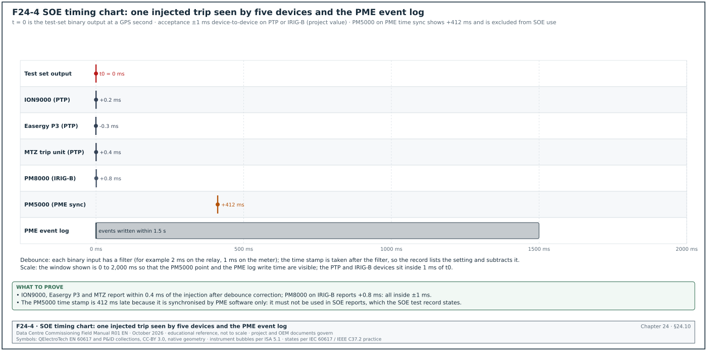
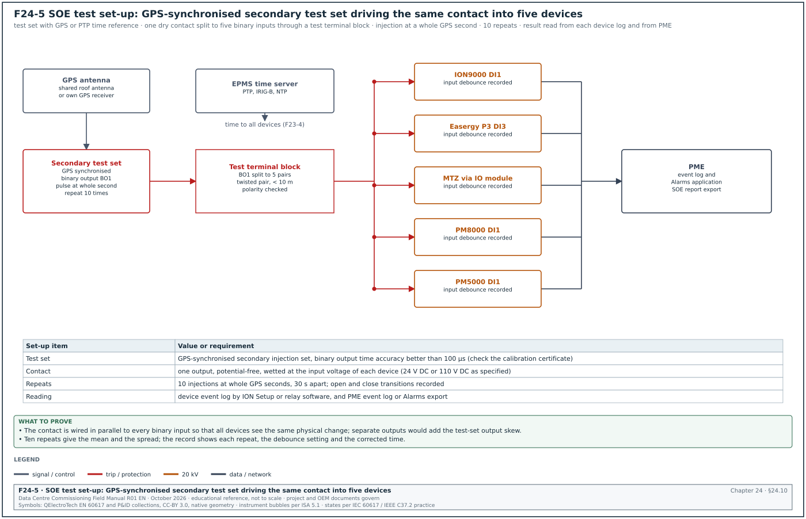
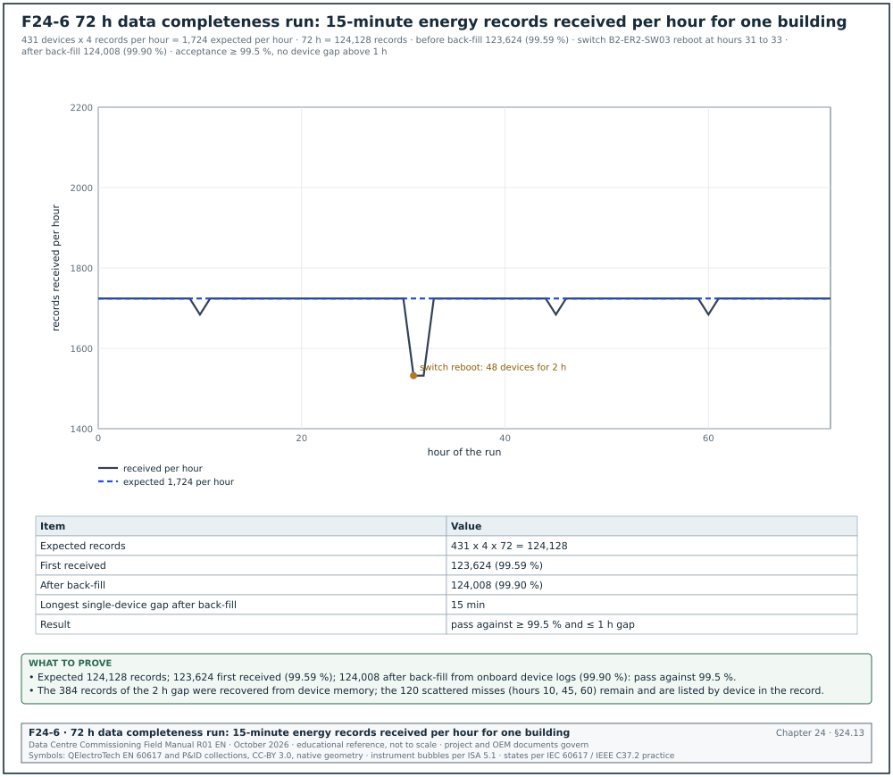

24.0Scope of this chapter
This chapter is the step-by-step commissioning procedure for an electrical power monitoring system (EPMS) built on Schneider Electric EcoStruxure Power Monitoring Expert (PME). Chapter 23 describes the architecture and the devices. Chapter 26 covers the operational technology (OT) network and cabling tests that must be complete before the communication tests in this chapter.
- Workflow and levels. The commissioning levels Level 1 (L1) to Level 5 (L5) for the EPMS, the order of the 14 steps, the owner, witness, duration and exit record of each step.
- Prerequisites and instruments. The documents and the calibrated test instruments needed, with accuracy and calibration requirements.
- Device tests. Configuration verification, wiring diagnostics of the current transformer (CT) and voltage inputs with phasor diagrams, communication verification, value verification against a calibrated reference and energy register checks.
- Status and alarm tests. Breaker status and trip indication, alarm tests and the alarm flood test.
- Time tests. The sequence-of-events (SOE) timestamp accuracy test and the waveform trigger test.
- System tests. Power quality (PQ) settings, report verification, the power usage effectiveness (PUE) calculation check and the 72-hour data completeness run.
- Security and recovery. Accounts, passwords, backups and a restore test.
- Integration and acceptance. Tests with the building management system (BMS) and data-centre infrastructure management (DCIM), the role of the EPMS in the integrated systems test (IST), and the acceptance package.
- Filled records. A meter verification sheet and an SOE test record with example values from the MSC-1 campus.
Process documents used: ASHRAE Guideline 0-2019 (commissioning process) and ANSI/NETA ATS-2025 (acceptance testing of electrical equipment, section on metering and instrument transformers; the project specification names the edition that applies). Standards and other documents used: IEC 62053-22 (static meters, Class 0.2S and 0.5S), IEC 61869-2 (current transformers), IEC 61000-4-30 Edition 4.0 (power quality measurement), IEEE 1588-2019, IEC 62443-3-3, PME 2023 and PME 2024 online help, and the MSC-1 case ledger.
24.1Commissioning workflow and levels
Figure F24-1 shows the 14 steps. The table gives the level, the trigger, the owner and the exit record for each step. Durations are typical for one MSC-1 building with 431 devices (chapter 23.15).


| Step | Level | Trigger | Owner | Exit record |
|---|---|---|---|---|
| 1 Factory acceptance test (FAT) of PME server | L1 | server built with licences and base configuration | EPMS contractor | FAT report signed by the commissioning authority (CxA) |
| 2 Device delivery | L2 (L2A) | switchboards and meters delivered | switchboard manufacturer | receiving record with serial numbers and firmware |
| 3 Install and wire | L2 | switchboard installed | electrical contractor | L2 checklist per switchboard |
| 4 Configuration check | L3 | device powered | EPMS contractor | device configuration record |
| 5 Wiring diagnostics | L3 | load on the circuit (or primary injection) | EPMS contractor | phasor record |
| 6 Communications | L3 | network L3 tests complete (chapter 26) | EPMS contractor | communication record |
| 7 Value verification | L3 | load of at least 10 % of CT rating | EPMS contractor, CxA witness | meter verification sheet |
| 8 Breaker status and trip | L3 | breaker test with the switchboard manufacturer | electrical contractor and EPMS contractor | point-to-point sheet |
| 9 Alarm tests | L4 | all devices online | EPMS contractor | alarm test record |
| 10 SOE timestamp test | L4 | time server and Precision Time Protocol (PTP) or IRIG-B working | EPMS contractor, relay engineer | SOE test record |
| 11 PQ, waveforms, reports | L4 | steps 4 to 10 signed | EPMS contractor | report check sheet |
| 12 72 h data run | L4 | steps 9 to 11 signed, configuration frozen | EPMS contractor | data completeness record |
| 13 Security, backup, restore | L4 | configuration frozen | EPMS contractor, owner IT security | restore record |
| 14 Acceptance | L5 inputs | all records accepted | commissioning manager | EPMS acceptance certificate |
24.1.1Rules for moving between steps
- One record closes one step. A step is complete only when its record is signed by the EPMS contractor and accepted by the CxA. The CxA reviews each record within 3 working days.
- Sampling by the CxA. For steps 4 to 7 the CxA witnesses a sample of 10 to 20 % of devices on each switchboard. The sample always includes every intake, generator and block main meter. A failure in the sample raises the sample to 100 % for that switchboard.
- Configuration freeze. Before step 12 the EPMS contractor freezes the PME configuration and records the revision. Any later change resets the 72 h run.
- Issues. Every failure is entered in the issues log with a category (A, B, C as in section 09.9.1) and a retest reference. Category A issues block the next step on that device.
- Interfaces. Steps 6 and 10 depend on the network contractor (switches, PTP) and the time server supplier. Steps 8 and 14 depend on the switchboard manufacturer and the BMS contractor. Hold the dates in the integrated schedule.
24.2Prerequisites, documents and instruments
24.2.1Documents needed before testing
- Approved meter schedule. Device tag, model, CT ratio and voltage transformer (VT) ratio, wiring mode, location and network address for every device.
- Points list. The fields of chapter 23.16.1, with the expected range for each point.
- Alarm list. The fields of chapter 23.10.4.
- Single-line diagrams and switchboard drawings. The as-built revision, with CT locations and test blocks.
- Network drawings and IP plan. The network drawings and the Internet Protocol (IP) address plan from chapter 26, with switch port allocation.
- Protection settings and coordination study. For the breaker settings report check.
- PUE method statement. Which meters are total facility energy and which are IT energy.
- Test scripts. One script per test type in this chapter, approved by the CxA 10 working days before the first test.
24.2.2Test instruments
| Instrument | Use | Accuracy or class requirement | Calibration |
|---|---|---|---|
| Reference power analyser (three-phase, with current clamps or direct current inputs) | value verification | measurement uncertainty at least 3 times better than the meter under test; for a Class 0.2S meter, 0.05 % or better on power with direct inputs | within 12 months, traceable certificate |
| Current clamps for the analyser | CT secondary current | 0.1 % class or better at 1 to 5 A | calibrated with the analyser as a set |
| Secondary injection test set with Global Positioning System (GPS) time reference | SOE test, waveform trigger test, CT secondary injection | binary output time accuracy better than 100 µs (check the certificate); voltage and current amplitude 0.05 % | within 12 months |
| Phase rotation meter | phase sequence | not applicable (indicator) | function check before use |
| Multimeter (measurement category (CAT) III 600 V or better) | continuity, voltages | basic accuracy 0.1 % on direct current (DC) | within 12 months |
| Laptop with ION Setup, relay software and a Modbus scanner | configuration and register reads | not applicable | software versions recorded |
| Network tester or laptop with ping and packet capture | communication tests | not applicable | not applicable |
Check: The reference analyser must be more accurate than the meter it checks. A ratio of at least 3 to 1 between the meter error limit and the reference uncertainty is the usual practice. For a PM8000 (Class 0.2S) the reference uncertainty on active power must be 0.07 % or better. This means direct current inputs through the test block, because most clamp sets add 0.2 % or more.
24.2.3Safety conditions
- Permit to work. Tests inside the low-voltage (LV) compartment of a live switchboard need a permit to work and an energised work assessment. The site electrical safety rules apply (chapter 10).
- Personal protective equipment. Arc-rated clothing to the category on the switchboard arc-flash label.
- CT secondary. The shorting links of the test block are closed before any CT lead is lifted. An open CT secondary under load produces a dangerous voltage.
- Two people. Work in the LV compartment of a live switchboard is done by two competent persons.
24.3Device configuration verification
Purpose: Prove that each device holds the settings in the approved meter schedule.
Trigger: Device powered and reachable with ION Setup or its configuration software.
Owner: EPMS contractor technician; CxA witnesses the sample.
Inputs: Meter schedule, device configuration record template (chapter 23.16.2), laptop with ION Setup.
Steps:
- Read the nameplate. Record model, order code, serial number and the CT nameplate ratio and class. Take a photograph of the meter and of one CT nameplate.
- Connect and read. Connect with ION Setup (ION devices) or the device configuration software. Record the firmware version.
- Check the CT settings. CT primary and secondary in the meter equal the CT nameplate. For the MSC-1 block main this is 4000 / 5.
- Check the PT settings. The potential transformer (PT) primary and secondary in the meter equal the VT ratio, or 415 / 415 for direct connection.
- Check the wiring mode. 4W-Wye for the MSC-1 LV systems and for the 20 kV intakes with star VTs.
- Check nominal values. Nominal voltage 415 V (line to line) or 20,000 V, nominal frequency 50 Hz, nominal current equal to the CT primary.
- Check demand and logging. Demand interval 15 min block; logging template name and revision as on the schedule.
- Check waveform and PQ settings. Sag threshold 90 %, swell 110 %, pre and post cycles as in chapter 23.8.4.
- Check communication settings. IP address, mask, gateway, protocol, unit ID, serial address and baud rate.
- Check the time source. One source as on the time synchronisation diagram.
- Save the configuration file. Save the device configuration (ION Setup template or export) to the project document system under the asset tag.
- Record and sign. Fill the device configuration record. Any difference is corrected and re-read before signing.
Acceptance: Every field equals the approved meter schedule. No tolerance applies to settings.
Records: Device configuration record with configuration file and photographs.
Common errors:
- Template applied with the wrong CT ratio. A template copied from another switchboard carries its CT ratio. Detect by comparing the CT setting against the nameplate photograph for every device, including those outside the CxA sample.
- Nominal voltage left at the factory default. Many meters ship with a nominal value that does not match 415 V. PQ triggers then work on the wrong base.
- Time source set to two sources. PME sync left enabled on a meter that also has IRIG-B. Detect by reading the clock source register or the ION Setup clock screen.
24.3.1Device configuration record (filled example)
Example:
| Field | Value |
|---|---|
| Asset tag | B2-DH3-LVMSB-A1-Q1-PM |
| PME name | B2_ER2.LVMSB_A1_MAIN |
| Model | PowerLogic PM8000 |
| Firmware | read: as installed; recorded on the record |
| CT primary / secondary / class | 4000 / 5 A / 0.2S, 5 VA |
| PT primary / secondary | 415 / 415 V (direct) |
| Wiring mode | 4W-Wye |
| Nominal V / I / f | 415 V / 4,000 A / 50 Hz |
| Demand | 15 min block |
| Logging template | B2_LV_MAIN_v3 |
| Sag / swell trigger | 90 % / 110 % |
| IP / mask / gateway | 10.21.10.41 / 255.255.255.0 / 10.21.10.1 |
| Protocol / unit ID | ION and Modbus Transmission Control Protocol (TCP) / 1 |
| Time source | IRIG-B (B004), PME sync disabled |
| Default password changed | yes, stored in the owner password vault entry B2-EPMS-041 |
| Result | pass |
| Signed | EPMS technician, CxA (sample witnessed) |
24.4Wiring diagnostics: phase rotation, CT polarity and phasors
Purpose: Prove that each CT is on the right phase with the right polarity, and that the voltage inputs are in the right order.


Trigger: Device configured (24.3) and load on the circuit of at least 10 % of the CT rating, or primary current injection where no load is available.
Owner: EPMS contractor technician; CxA witnesses every intake, generator and block main.
Inputs: Phasor screen of the meter (front panel or ION Setup), phase rotation meter, the expected power factor of the load.
Steps:
- Check voltage phase sequence. Read the phase rotation at the meter terminals with a phase rotation meter, and read the meter's own phase rotation value. Both must show L1-L2-L3 (positive sequence).
- Read voltage magnitudes. V1N, V2N, V3N within 2 % of each other and close to 239.6 V on a 415 V system.
- Read voltage angles. V1 at 0°, V2 at -120°, V3 at +120° (or 240°), within ±2°.
- Read current magnitudes. I1, I2, I3 compared with a clamp reading on the CT secondary at the test block. Each within 2 % of the clamp reading.
- Read current angles. Each current lags its own voltage by the load angle. For a power factor of 0.95 lagging, the angle is 18.2° (arccos 0.95).
- Read phase powers. P1, P2, P3 all positive (for a load) and within the load unbalance expected.
- Compare with the diagram. Draw or print the phasor diagram (Figure F24-2) and attach it to the phasor record.
- Correct any fault. With the CT shorted at the test block, swap S1 and S2 for a reversed CT, or re-terminate a CT on the wrong phase. Repeat steps 4 to 7.
- Record. Fill the phasor record with all magnitudes and angles.
Acceptance: Positive phase sequence. Each current within ±30° of its own voltage for a load with power factor above 0.87 (the window is set from the expected load power factor). All phase powers positive for a load. Clamp and meter currents within 2 %.
Records: Phasor record with the diagram.
24.4.1How each wiring fault appears
| Fault | Current angle seen | Phase power | Total power | Neutral current calculated | Action |
|---|---|---|---|---|---|
| Correct | each I lags its V by about 18° | all positive | correct | small | record on the phasor record |
| One CT reversed (P1 and P2 swapped, or S1 and S2 swapped) | that I shifted by 180° | that phase negative | one third of correct (balanced load) | about twice the phase current | short the CT at the test block, swap S1 and S2 |
| Two CTs swapped (I1 on L2, I2 on L1) | I1 near V2 angle, I2 near V1 angle | two phases with wrong values, power factor (PF) near 0.5 or negative | wrong | high | short the CTs, re-terminate each CT on its own phase |
| Voltage V1 and V2 swapped | negative sequence shown | wrong on two phases | wrong | not affected | open the fused voltage links under permit, swap the leads |
| CT from another circuit | angle and magnitude unrelated to the load | wrong | wrong | high | trace the CT secondary to its circuit, re-terminate |
| CT shorting link left closed | current near zero | near zero | near zero | near zero | open the shorting link, re-read |
Worked example: Reversed CT on phase 2 of B2-DH3-LVMSB-A1. The load bank draws 3,000 A per phase at 415 V with power factor 0.95. This 2,048.7 kW test load is a different quantity from the 1.5 MW block IT load of the MSC-1 worked example. It is set to test the meter at 86 % of 3,478 A, the rated LV current of the 2.5 MVA block transformer. Phase voltage = 415 / √3 = 239.6 V. Correct phase power = 239.6 × 3,000 × 0.95 = 682.9 kW; correct total = 3 × 682.9 = 2,048.7 kW. With CT2 reversed, I2 is turned by 180°, so P2 = -682.9 kW. The total = 682.9 - 682.9 + 682.9 = 682.9 kW, one third of the correct value. The calculated neutral current is the vector sum of I1, I2 and I3. With I2 reversed the sum equals twice I2 in the reversed direction, about 6,000 A. The clamp reading on the reference shows 2,048 kW. The technician closes the shorting links of TB1 and swaps S1 and S2 of CT2 at the block. The technician then opens the links and reads P2 = +683.1 kW and the total 2,047.7 kW (682.7 + 683.1 + 681.9, from the phasor record below).
24.4.2Phasor record (filled example)
Example:
| Quantity | Phase 1 | Phase 2 (as found) | Phase 2 (after fix) | Phase 3 |
|---|---|---|---|---|
| V (L-N), V | 239.8 | 239.4 | 239.4 | 239.7 |
| V angle | 0.0° | -120.1° | -120.1° | 119.9° |
| I (meter), A | 2,998 | 3,004 | 3,003 | 2,995 |
| I (clamp at TB1, scaled), A | 3,001 | 3,006 | 3,006 | 2,999 |
| I angle | -18.3° | +41.5° | -138.5° | 101.7° |
| P, kW | 682.7 | -683.5 | 683.1 | 681.9 |
| PF | 0.95 | -0.95 | 0.95 | 0.95 |
| Phase sequence | L1-L2-L3 | |||
| Result | fail as found | pass after fix |
The phase 3 current angle of 101.7° is correct: V3 is at 119.9° and the current lags by 18.2°. The phase 2 angles follow from V2 at -120.1°: after the fix the current lags by 18.4° (-138.5°); as found it was turned by 180° (+41.5°), which is +161.6° from V2.
24.5Communications verification
Purpose: Prove that PME communicates with every device through the planned path with stable response times.
Trigger: Network tests of chapter 26 complete for the switches serving the devices; devices configured.
Owner: EPMS contractor; network contractor available for faults.
Steps:
- Ping each Ethernet device. From the PME server, 100 pings to each device. Acceptance: 0 % loss, round-trip time (RTT) below 10 ms on the local network.
- Add sites and devices in Management Console. Each Ethernet device as an Ethernet device; each serial device under its Link150 gateway site with its serial address.
- Check device status. Every device shows connected. Record the time to connect.
- Check gateway settings. For each Link150: baud rate, parity, stop bits, timeout and IP filter as on the gateway list (chapter 23.15).
- Read a register from each serial device. Use a Modbus scanner through the gateway to read one known register (for example the serial number). This isolates gateway faults from PME faults.
- Measure the poll cycle. For each serial line, record the update period of a real-time value in Diagrams. Acceptance: at or below the value calculated in design (1.5 s for the MSC-1 generator lines).
- Check the system log. ION_SystemLog shows no repeated communication errors over 1 h for the devices tested.
- Record. Fill the communication record.
Acceptance: All devices connected; no communication error repeated more than once in 1 h; poll cycle within the design value.
Records: Communication record per switchboard.
| Field | Type | Example |
|---|---|---|
| Device | PME name | B2_GEN.GEN_07 |
| Path | text | 10.21.10.202 (B2-GEN-LK150-02), serial address 1 |
| Ping loss / RTT | %, ms | 0 % / 0.8 ms to the gateway |
| Status in Management Console | connected / disconnected | connected |
| Register read test | value | serial number read correctly |
| Poll cycle | s | 1.4 |
| Errors in 1 h | count | 0 |
| Result | pass / fail | pass |
Common errors:
- RS-485 termination missing or doubled. Intermittent errors on the last devices of a line. Fit one 120 Ω terminator at each end of the line only, and check the bias setting of the gateway.
- Duplicate serial addresses. Two devices with address 1 on one line produce corrupted replies. Read each device address at its front panel.
- Unit ID wrong for IFE or EIFE. The MasterPact IFE and EIFE Ethernet interface modules answer on unit ID 255. A device added with unit ID 1 does not respond.
- Firewall between PME and devices. A firewall in the path blocks ION (TCP port 7700) or Modbus (TCP 502). Confirm the ports in the conduit table (chapter 27, section 27.10.4) for the installed PME version.
24.5.1Register spot check against the device display
A device can be connected in PME and still deliver wrong values if the register map, data type or scaling is wrong. The fault is most frequent on third-party devices: generator controllers, automatic transfer switch (ATS) controllers and uninterruptible power supply (UPS) cards. PME uses a device driver whose register map must match the firmware of the device.
- Choose three registers per device type. One analogue value (for example generator kW), one status (for example generator running), one counter (for example engine hours).
- Read the device display. Read each value on the controller front panel and record it with the time.
- Read PME. Read the same values in Diagrams within 10 s.
- Compare. Analogue values within the display resolution; status identical; counter identical.
- Check scaling and units. A value that differs by a factor of 10, 100 or 1,000 indicates a scaling or unit error in the driver. A value that is random indicates a word-order (byte swap) error in a 32-bit register.
- Record the driver version. Record the PME device type and driver version on the communication record, because a firmware upgrade of the controller can change the register map.
Example: Generator controller GEN-07 displays 2,412 kW; PME shows 241.2 kW. The driver applies a scale of 0.1 that the controller firmware does not use. The EPMS contractor corrects the driver scaling, re-reads 2,412 kW and records the change on the communication record.
24.6Value verification against a calibrated reference
Purpose: Prove that each meter reads voltage, current, power and power factor within the acceptance tolerance against a calibrated reference.


Trigger: Wiring diagnostics passed; load of at least 10 % of the CT rating.
Owner: EPMS contractor test engineer; CxA witnesses every intake, generator and block main meter and a sample of feeders.
Inputs: Reference power analyser with calibration certificate, meter configuration record, the tolerance table.
24.6.1Acceptance tolerance
The acceptance tolerance combines the meter class, the CT class and the reference uncertainty. The specification states the values; the table gives example values used on hyperscale programmes. The meter-class limits come from IEC 62053-22. For a Class 0.2S meter at unity power factor, the limit is ±0.2 % from 0.05 In to Imax and ±0.4 % from 0.01 In to 0.05 In. Elexon Code of Practice 4 reproduces the BS EN 62053-22 table; the same limits sit in IEC 62053-22:2020 Table 3, "Acceptable percentage error limits". In is the rated current of the meter (5 A) and Imax its maximum current.
| Meter | CT class | Where the reference is connected | Example tolerance on kW | On V | On I |
|---|---|---|---|---|---|
| ION9000 (0.1S) | 0.2S | in series through the test block (same CTs) | ±0.3 % | ±0.2 % | ±0.3 % |
| PM8000 (0.2S) | 0.2S | same CTs, through the test block | ±0.5 % | ±0.3 % | ±0.5 % |
| PM5000 (0.5S) | 0.5S or 0.5 | same CTs, through the test block | ±1.0 % | ±0.5 % | ±1.0 % |
| MicroLogic X metering | breaker sensors | compared with the meter on the same circuit | ±2.0 % | ±0.5 % | ±1.5 % |
The MicroLogic X row is an example comparison limit. The MicroLogic X user guide (DOCA0102) classes the MasterPact MTZ power and energy metering as Class 1 to IEC 61557-12. The limits are ±1 % for active power at power factor 1 from 10 % of Ib and ±1.5 % from 5 % of Ib. The ±2.0 % limit adds the error of the PM8000 and its CT, against which the trip unit is compared.
When the reference is connected in series with the meter on the same CTs, the CT error is common to both and drops out of the comparison. The test then proves the meter and its settings. To prove the CT as well, the reference must use its own primary current sensor, which is only practical at low current. Accept the CT on its factory test certificate and its nameplate class.
24.6.2Procedure
Steps:
- Record the reference details. Model, serial number, calibration date and certificate number.
- Connect the reference. Open the test block current links in the order given on the block label, so that the reference current inputs are in series with the meter. Connect the reference voltage inputs to the block voltage links.
- Check the connection. The reference shows the same phase sequence and similar values to the meter.
- Set the reference ratio. Enter the CT ratio 4000/5 in the reference so that it reads primary values.
- Take readings. At a steady load, read the meter and the reference within 10 s of each other, three times. Use the mean.
- Repeat at load points. Where the load can be set (load banks during L4 or IST), repeat at 10, 25, 50, 75 and 100 % of the block load. Where the load cannot be set, take one point at the available load and repeat later at a higher load.
- Calculate the error. Error % = (meter - reference) / reference × 100.
- Restore. Remove the reference, close the links in the correct order and check that the meter reads the same current as before.
- Record. Fill the meter verification sheet.
Acceptance: Every error inside the tolerance of 24.6.1 at every load point.
24.6.3Meter verification sheet (filled example)
Figure F24-3 plots the results.
Worked example: Meter verification for B2-DH3-LVMSB-A1 meter M-A1 (PM8000) during the L4 load bank test. Reference: three-phase analyser, 0.05 % class, certificate dated 2026-03-14. The load bank sets five points of the 2,048.7 kW test load used in 24.4 (3,000 A per phase on the LV main). The MSC-1 block IT load is 1.5 MW.
| Load point | Reference kW | Meter kW | Error % | Reference V (L-N avg) | Meter V | Reference A (avg) | Meter A | Result |
|---|---|---|---|---|---|---|---|---|
| 10 % | 204.9 | 205.6 | +0.32 | 239.7 | 239.8 | 300.1 | 300.9 | pass |
| 25 % | 512.2 | 513.1 | +0.18 | 239.6 | 239.6 | 750.2 | 751.4 | pass |
| 50 % | 1,024.4 | 1,025.3 | +0.09 | 239.5 | 239.5 | 1,500.3 | 1,501.6 | pass |
| 75 % | 1,536.5 | 1,537.4 | +0.06 | 239.4 | 239.4 | 2,250.6 | 2,252.0 | pass |
| 100 % | 2,048.7 | 2,051.0 | +0.11 | 239.2 | 239.3 | 3,000.8 | 3,003.1 | pass |
All five points are inside ±0.5 % on kW. The worst error is +0.32 % at 10 % load, which is expected: meter error grows at low current. The +0.32 % is the analyser value from the unrounded means; the rounded values in the table give +0.34 %.
The feeder meter M-F07 (PM5000 on a class 0.5 CT, 300/5 A) on the same board read +1.8 % at 10 % load and +0.9 % at 25 % load. The tolerance is ±1.0 %, so the 10 % point fails. The team found the CT burden: the leads were 2.5 mm² over 18 m, giving 2 × 18 × 0.0088 Ω × 5² = 7.9 VA, above the CT rating of 7.5 VA. Re-routing the leads to 4 mm² (2 × 18 × 0.0055 Ω × 5² = 5.0 VA) and retesting gave +0.6 % at 10 % load. The issue was logged as category B, closed after retest.
24.7Energy register checks
Purpose: Prove that energy registers count in the right direction and at the right rate, and that PME logs match the device registers.
Steps:
- Read the start values. Read kWh delivered, kWh received, kvarh and kVAh on the meter and in PME at the same minute.
- Run a known load. Hold a steady load for at least 1 h (load bank during L4, or normal load).
- Read the end values. Read the same registers at the end.
- Calculate the expected energy. Expected kWh = average reference kW × hours.
- Compare. Meter kWh increment against the expected value; PME logged kWh against the meter increment.
- Check direction. For an import load, kWh delivered rises and kWh received stays constant. For a generator test with export, received rises.
- Check the 15-minute log. The four 15-minute intervals of each hour add up to the hourly increment.
Acceptance: Meter increment within the kW tolerance of 24.6.1 plus one register count; PME logged energy equal to the meter increment within one count; direction correct.
Worked example: Energy check on M-A1 over 2 h at 1,024.4 kW (reference average). Expected 2,048.8 kWh. Meter register at start 18,422.6 kWh, at end 20,473.2 kWh: increment 2,050.6 kWh, error +0.09 %. PME log for the 8 intervals: 256.3, 256.4, 256.2, 256.4, 256.3, 256.3, 256.4, 256.3 = 2,050.6 kWh. PME equals the meter increment, and the meter is inside ±0.5 % of the reference.
24.8Breaker status, trip indication and control tests
Purpose: Prove that every breaker status, trip indication and trip cause reaches PME (and the BMS where mapped) with the right value and the right time.
Trigger: Breaker installed and tested by the switchboard manufacturer; trip unit communicating.
Owner: Electrical contractor operates the breaker under permit; EPMS contractor records PME; switchboard manufacturer tests the trip unit.
Steps:
- Status open and closed. Operate the breaker open and closed. PME and the BMS (if mapped) show the change within the update time of the points list (for example 2 s in PME, 5 s in the BMS).
- Racked positions. Rack out to test and disconnected positions. PME shows racked in, test and racked out as listed.
- Spring charged. Discharge and recharge the closing spring where the indication is mapped.
- Trip indication. Trip the breaker with the trip unit test function or by secondary injection through the manufacturer's test kit. PME shows "tripped" and the trip cause (long time, short time, instantaneous, ground fault).
- Trip cause match. Each injected protection function appears as its own cause in PME.
- Settings read-back. Read Ir, tr, Isd, tsd, Ii, Ig, tg and the energy reduction maintenance setting (ERMS) status from PME and compare with the coordination study.
- Remote control. Only where the specification allows remote control: test open and close commands from PME under a separate permit and with the switchboard in a safe state.
- Record. Fill the point-to-point sheet.
Acceptance: Every status and trip cause correct; settings equal to the coordination study with zero deviation; update times within the points list values.
| Field | Type | Example |
|---|---|---|
| Breaker tag | text | B2-DH3-LVMSB-A1-Q1 |
| Test | text | trip by short-time injection |
| Expected PME state | text | tripped, cause short time |
| Observed PME state and time | text, s | tripped, short time, 1.2 s |
| Observed BMS point | text, s | B2.EPMS.LVMSB_A1.TRIP = 1, 4.1 s |
| Settings Isd / tsd in study | value | 6 × Ir / 0.2 s |
| Settings read in PME | value | 6 × Ir / 0.2 s |
| Result | pass / fail | pass |
24.9Alarm tests
Purpose: Prove that every alarm in the alarm list fires at its set value, with its priority, delay and notification, and that it clears correctly.
Steps:
- Choose the stimulus. For each alarm, use the real condition where safe, for example a breaker trip or a pulled cable for loss of communication. Otherwise use a simulated value: secondary injection into the meter or a test value in the Virtual Processor.
- Apply the stimulus. The EPMS contractor applies the stimulus and records the time on the alarm test record.
- Observe PME. The alarm appears in the Alarms application with the right priority and text after the set delay.
- Observe notifications. The Event Notification Module sends email, a short message service (SMS) message or a Simple Network Management Protocol (SNMP) notification to the listed group; the BMS shows the mapped point.
- Acknowledge. Acknowledge in PME and record who and when.
- Remove the stimulus. The alarm clears at the hysteresis value.
- Record. Fill the alarm test record.
Acceptance: Alarm active within the set delay plus 10 s; notification received within 60 s; clear at the hysteresis value; text and priority as in the alarm list.
24.9.1Alarm flood test
The alarm flood test checks what the operator sees during a large event. On an MSC-1 building, a utility loss followed by a generator start produces events from more than 100 devices within 30 s.
- Prepare. Record the alarm count rule from the owner project requirements (OPR), for example "the first-out critical alarms visible on one screen without scrolling".
- Create the event. Use the L4 utility failure test or the IST scenario (chapter 28).
- Count. Export the Alarms list for the 10 minutes after the event. Count alarms by priority.
- Check grouping. PQ events from several meters are grouped into one event by event clustering when clocks are synchronised.
- Check the BMS. The BMS shows the mapped critical points without delay above its update time.
- Record. The flood record lists counts by priority and any alarm without an action.
Worked example: Alarm flood after a simulated utility loss on building B2. In 10 minutes PME recorded 412 events. They included 24 priority 1 alarms (one per block main transfer) and 34 priority 2 alarms (17 generators starting and 17 generator breakers closing). The rest were 120 priority 4 alarms (PQ sags seen by meters) and 234 events logged without alarm. After event clustering the 120 PQ alarms became one PQ event with 120 device records. The operator screen showed the 24 critical alarms on one page, which meets the OPR rule.
24.10SOE timestamp accuracy test
Purpose: Prove that devices used for sequence-of-events analysis time-stamp the same physical event within the specified tolerance.




Trigger: Time server locked to GPS; PTP and IRIG-B distribution tested; devices configured with one time source each.
Owner: EPMS contractor with the protection relay engineer; CxA witnesses 100 %.
Inputs: GPS-synchronised secondary injection test set (Figure F24-5), test terminal block, debounce settings of each device binary input.
Steps:
- Check the time server. GPS locked, number of satellites, PTP grandmaster status; record the values.
- Check device clocks. Read the clock and the time source status of each device; all show the expected source and a locked or synchronised flag.
- Wire the stimulus. One test-set binary output (a dry contact) wired in parallel to one binary input on each device under test through a test terminal block. Use twisted pair below 10 m to each device.
- Record debounce. Read and record the debounce or filter time of each binary input (for example 2 ms on the relay input, 1 ms on the meter input).
- Inject. Program the test set to close the contact at a whole GPS second. Repeat 10 times at 30 s intervals; record both closing and opening transitions.
- Read the device logs. Read the event time of each transition from each device log (relay software, ION Setup) and from the PME event log.
- Correct for debounce. Corrected time = recorded time - debounce setting.
- Calculate. For each repeat, the offset of each device from the test-set time; then the mean and the maximum absolute offset over the 10 repeats.
- Record. Fill the SOE test record; mark devices that are not on PTP or IRIG-B as "not SOE grade".
Acceptance: For SOE-grade devices, every corrected offset within ±1 ms of the test-set time (example project value; the EPMS specification sets the tolerance). PME event log entries present for every transition within 5 s.
Figure F24-4 shows the result of one repeat.
24.10.1SOE test record (filled example)
Worked example: SOE test on building B2, 20 kV intake and block A1 devices. Time server: GPS locked, 11 satellites, PTP grandmaster class 6. Test set: GPS synchronised, binary output accuracy 50 µs per certificate.
| Device | Time source | Debounce (ms) | Mean corrected offset (ms) | Maximum absolute offset (ms) | Result |
|---|---|---|---|---|---|
| B2-INC1 ION9000 | PTP | 1 | +0.2 | 0.4 | pass |
| B2-INC1 Easergy P3 | PTP | 2 | -0.3 | 0.6 | pass |
| B2-DH3-LVMSB-A1-Q1 MicroLogic X (input/output (IO) module input) | PTP | 1 | +0.4 | 0.7 | pass |
| B2-DH3-LVMSB-A1 PM8000 | IRIG-B | 1 | +0.8 | 0.9 | pass |
| B2-DH3-LVMSB-A1-F07 PM5000 | PME sync | 1 | +412 | 438 | not SOE grade |
| PME event log | Network Time Protocol (NTP) | not applicable | all 20 transitions present within 1.5 s | pass |
The PM8000 offset of +0.8 ms is inside the tolerance but close to it. The team recorded the IRIG-B cable length (64 m) and the IRIG-B format (B004) on the record so that a later drift can be traced.
Common errors:
- Separate test-set outputs for each device. The output skew of the test set is added to the result. Use one contact split to all devices.
- Debounce not subtracted. A 10 ms filter on a relay input makes the relay look 10 ms late.
- Time zone or daylight setting wrong. A device shows +7 h or -7 h. Set Coordinated Universal Time (UTC) in devices and the offset in the display.
- PTP not passing a switch. A switch without PTP support in the path adds variable delay. The device reports synchronised but offsets of 1 to 5 ms appear. Check the PTP mode of every switch on the path (chapter 26.13).
24.11Power quality settings and waveform trigger tests
Purpose: Prove that power quality meters capture disturbances at the set thresholds, store the waveform and deliver it to PME with the right classification.
Trigger: SOE test passed for the meters involved (the waveform time stamp depends on the clock).
Owner: EPMS contractor; CxA witnesses intake and block main meters.
Steps:
- Confirm settings. Read the sag, swell and transient thresholds, nominal voltage, pre-trigger and post-trigger cycles from the meter; compare with the device configuration record.
- Isolate the voltage inputs. With the permit in place, open the voltage links of the test block so that the meter voltage inputs are fed only by the test set.
- Inject a sag. From the test set, apply nominal voltage (239.6 V phase to neutral) for 2 s. Then apply a sag to 80 % (191.7 V) for 100 ms on phase 1, then nominal.
- Inject a deeper sag. Repeat with 50 % for 150 ms on all three phases.
- Inject a swell. Apply 115 % (275.5 V) for 200 ms.
- Inject an interruption. Apply 0 V for 20 ms (one cycle at 50 Hz).
- Check the meter. Each injection appears in the meter event log with magnitude and duration within the meter specification (for example magnitude ±0.2 % of nominal, duration ±1 cycle).
- Check PME. Each waveform appears in PME within 15 minutes, with the correct number of pre and post cycles, and the Power Quality Performance Module classifies it against the tolerance curve.
- Restore. Close the voltage links, check that the meter reads the bus voltages.
- Record. Fill the waveform test record.
Acceptance: Four injected events captured, with magnitudes and durations within the meter specification and waveforms in PME. Classification correct: the 80 %/100 ms sag and the 115 %/200 ms swell inside the Information Technology Industry Council (ITIC) envelope. The 50 %/150 ms sag below the lower line, and the 20 ms interruption on the boundary.
| Field | Type | Example |
|---|---|---|
| Meter | PME name | B2_INC1.ION9000 |
| Injection | text | sag 50 %, 150 ms, three phases |
| Meter recorded magnitude | % | 50.1 % |
| Meter recorded duration | ms | 150 |
| Waveform in PME | yes/no, time | yes, 7 min after injection |
| Pre / post cycles seen | count | 4 / 30 |
| Classification | text | below ITIC lower curve |
| Result | pass / fail | pass |
Common errors:
- Voltage links left open after the test. The meter reads zero voltage and every power value is zero. The restore step reads the bus voltage before the permit is closed.
- Nominal voltage wrong. The sag threshold is calculated on the wrong base and the 80 % injection is recorded as 77 %.
- Waveform log full. The meter overwrites or stops recording. Set the log mode and the upload rate in Management Console.
24.12Report verification and the PUE calculation check
24.12.1Report verification
Use the eight steps of chapter 23.11.1 for every report template in the specification.
| Field | Type | Example |
|---|---|---|
| Report | text | Energy usage by hierarchy, building B2 |
| Interval | date and time | 2026-11-20 00:00 to 2026-11-21 00:00 UTC+7 |
| Hierarchy revision | text | B2_HIER rev 4 |
| Expected value (hand calculation) | number and unit | 864.2 MWh IT energy |
| Report value | number and unit | 864.2 MWh |
| Difference | % | 0.00 |
| Result | pass / fail | pass |
| Attached | file | report PDF and spreadsheet |
24.12.2PUE calculation check
Purpose: Prove that the PUE shown in PME equals the ratio of total facility energy to IT energy defined in the PUE method statement.
Steps:
- Read the method statement. List the meters for total facility energy and for IT energy, and any meters subtracted (for example office loads excluded by the owner rule).
- Check the hierarchy. Every meter in the method statement is in the right node of the hierarchy, once.
- Read registers. For a closed 24 h interval, read the energy increment of each meter from the device logs.
- Calculate. PUE = Σ facility energy / Σ IT energy, using energies, never averaged 15-minute PUE values.
- Compare. The PME PUE for the same interval equals the hand value within 0.005 (three decimal places of PUE).
- Check partial PUE. Where the dashboard shows mechanical and electrical loss components, check that the components add up to the total.
Worked example: PUE check for building B2 on 2026-11-20 during the L4 heat-load test at design load. Intake ION9000 B2-INC1: 527.2 MWh; B2-INC2: 526.8 MWh; total facility 1,054.0 MWh. Twenty-four UPS output meters: sum 863.9 MWh. PUE = 1,054.0 / 863.9 = 1.2200. The PME dashboard shows 1.220 for the day. The average of the 96 fifteen-minute PUE values is 1.2213, which differs from the ratio of totals by 0.0013; the report uses the ratio of totals, so the dashboard value is accepted. The design PUE in the case ledger is 1.22.
Common errors:
- A meter counted twice. A UPS output meter also included under a hall node gives an IT energy that is too high and a PUE that is too low.
- A meter missing. A mechanical motor control centre (MCC) meter left out of the facility node has no effect when the intakes are used for facility energy. It does distort the partial PUE.
- Generator energy during a test. During a generator test the intake meters see less energy; the method statement must say whether generator output is added to facility energy.
24.13Data completeness over 72 hours
Purpose: Prove that PME collects every logged record from every device over a continuous period of normal operation, and that gaps are recovered from device memory.


Trigger: Steps 4 to 11 signed; configuration frozen and its revision recorded.
Owner: EPMS contractor runs the test; CxA reviews the data.
Steps:
- Record the start. Start time, configuration revision, number of devices and expected records per interval.
- Run normal operation for 72 h. No configuration change. Network maintenance is planned outside the window. A disturbance that is part of normal operation (a switch reboot, a short power event) stays in the record.
- Query the database. At the end, count records per device per hour in ION_Data with a SQL query or a PME export.
- Find gaps. List every device-interval with no record.
- Back-fill. Trigger log upload from devices with onboard logs; repeat the count.
- Calculate. Completeness = records received / records expected × 100.
- Record. Fill the data completeness record with the per-hour plot (Figure F24-6) and the list of remaining gaps by device.
Acceptance: (example values; the specification governs) Completeness ≥ 99.5 % after back-fill; no device with a gap longer than 1 h after back-fill; every gap explained.
Worked example: Building B2 with 431 devices logging energy every 15 minutes. Expected records = 431 × 4 × 72 = 124,128. First count: 123,624 (99.59 %). The gap list showed 48 devices behind access switch B2-ER2-SW03 missing 8 intervals each (384 records). The switch had rebooted after a firmware fault at hour 31. The list also showed 120 single missing intervals spread over 3 hours. After back-fill from device memory, the 384 records were recovered: 124,008 records, 99.90 %. The 120 single misses came from PM5000 meters without onboard logging of that quantity. They were listed in the record and accepted under the 1 h rule, because each was a single 15-minute interval. The switch fault was logged as a network issue (category B) for the network contractor.
24.14Cybersecurity, accounts, backups and restore
Purpose: Prove that the EPMS meets the cybersecurity requirements and can be restored from backup.
Owner: EPMS contractor; owner IT and OT security representative witnesses.
Steps:
- Account review. Export the PME user list. Every account is named, has a role, and no shared administrator account exists. Default accounts are disabled or renamed as the specification states.
- Password policy. Create a test user with a weak password; PME 2023 and later refuse it under the strong password policy.
- Device passwords. For a sample of 10 % of devices and all gateways and switches, try the factory default password; it must fail.
- Protocols. Confirm the devices that use secure ION or secure Modbus with Transport Layer Security (TLS) where supported, as listed in the specification.
- Port scan. Scan the EPMS virtual local area network (VLAN) from the PME server and from the demilitarised zone (DMZ). Only the ports in the conduit table are open.
- Syslog. Generate a PME login failure; the security information and event management (SIEM) server receives the syslog message within 60 s.
- Backup. Run the backup jobs for the four databases and the configuration files; record file names, sizes and locations.
- Restore test. Restore the backups to a test server (a virtual machine in the DMZ test area). Start PME on the test server isolated from the devices. Check that the device list, hierarchies, reports and a sample of historical data match the production server.
- Timing. Record the restore time against the recovery time objective (RTO) in the OPR (for example 4 h).
- Record. Fill the restore record.
Acceptance: No default passwords; only listed ports open; syslog received; restore complete with matching data within the recovery time objective.
| Field | Type | Example |
|---|---|---|
| Backup set | text | B2-PME full, 2026-11-24 02:00 |
| ION_Data size | GB | 4.6 |
| ION_Network / ApplicationModules / ION_SystemLog | MB | 38 / 112 / 410 |
| Restore start / end | time | 09:10 / 10:42 |
| Restore duration | h | 1.5 |
| Devices in restored ION_Network | count | 431 |
| Sample trend comparison | text | 10 points, 7 days, identical |
| Result | pass / fail | pass |
24.15Integration tests with the BMS and DCIM, and the EPMS role in IST
24.15.1Point-to-point integration test
Steps:
- Select points. All critical and high-priority points and a 20 % sample of the rest from the integration points list.
- Change the value at the source. The electrical contractor operates the breaker under permit, or the EPMS contractor changes the load or injects at the meter.
- Read at the destination. The BMS or DCIM contractor reads the value and its time and writes both on the integration test record.
- Compare. Same value within the scaling tolerance (for example ±0.1 % for analogue values) and same units; update within the rate in the interface control document (ICD).
- Test stale data. Disconnect the gateway or block the Open Platform Communications (OPC) connection; the destination shows the stale or communication-lost state within the time in the ICD.
- Test write protection. From the BMS or DCIM, try to write to a mapped point. The write is refused.
- Record. Fill the integration test record and reference the ICD (chapter 25).
Acceptance: Every tested point correct; stale-data behaviour as written; writes refused.
24.15.2Source-stable permissive to the BMS
On the MSC-1 design the EPMS provides a "source stable" permissive (point SRC_STABLE) to the BMS after a utility loss and generator transfer. The BMS uses it to restart chilled-water pumps, dry coolers and other mechanical groups in steps.
- TRUE conditions. The EPMS sets SRC_STABLE TRUE when all of these hold. The source breaker is closed. Voltage and frequency stay inside the band for the hold time (example values: 30 s and 49.5 to 50.5 Hz; the generator and chiller original equipment manufacturer (OEM) limits set the project band). The transfer sequence is complete. No load shed or generator overload is active, and the signal quality is valid.
- FALSE conditions. Any condition lost, a stale value or loss of the EPMS link gives FALSE at the BMS.
- Test. The test checks that the point changes to TRUE only after these conditions are met and that the BMS restarts groups in the stated order and intervals. Chapter 25, section 25.7.2 gives the filled test record INT-L4-IF018-B2.
24.15.3EPMS role during the integrated systems test
During IST (chapter 28) the EPMS is the record of the electrical sequence. Before IST:
- Freeze the configuration. The EPMS contractor records the configuration revision on the IST scenario record. No changes are made during the IST window.
- Check time sync. The PME operator reads the time server and the SOE-grade device clocks on the morning of each IST day and records the GPS lock state on the IST scenario record.
- Prepare exports. The EPMS contractor prepares the event log export and the waveform export templates for each scenario.
- Assign a PME operator. One person records events and exports after each scenario within 1 h.
The EPMS event log and waveforms are attached to each IST scenario record as evidence of the transfer times and of the voltage at the critical loads.
24.16Acceptance package and handover
The EPMS acceptance certificate is signed when every item below is in the commissioning record set.
| Record | Count for building B2 (example) | Signed by |
|---|---|---|
| PME FAT report | 1 | EPMS contractor, CxA |
| Device configuration records | 431 | EPMS contractor; CxA sample |
| Phasor records | 67 (2 intakes, 17 generators, 24 block mains, 24 UPS) plus feeders | EPMS contractor; CxA |
| Communication records | 1 per switchboard | EPMS contractor |
| Meter verification sheets | 67 plus feeder sample | EPMS contractor; CxA |
| Point-to-point sheets for breakers | 1 per switchboard | electrical contractor; EPMS contractor |
| Alarm test records and flood record | 1 per alarm list section | EPMS contractor; CxA |
| SOE test record | 1 per building | EPMS contractor; CxA |
| Waveform test records | 1 per PQ meter | EPMS contractor |
| Report check sheets and PUE check | 1 per report template | EPMS contractor; CxA |
| Data completeness record | 1 | EPMS contractor; CxA |
| Restore record and security checklist | 1 | EPMS contractor; owner security |
| Integration test records | 1 per ICD | EPMS and BMS or DCIM contractors |
| As-built documents | meter schedule, points list, network drawings, licence certificate | EPMS contractor |
| Training record | operators and engineers | EPMS contractor, owner |
Steps:
- Assemble. The EPMS contractor compiles the package within 5 working days after the last test.
- Review. The CxA reviews within 5 working days and returns comments.
- Close issues. All category A and B issues closed; category C issues listed with dates.
- Sign. The commissioning manager signs the EPMS acceptance certificate; the data-centre operations (DCOps) lead countersigns.
24.17Common errors across the EPMS commissioning
| Error | Symptom | How to detect before the witness test | Fix |
|---|---|---|---|
| CT ratio wrong in the meter | values off by a fixed ratio | compare CT setting with the nameplate photograph for every device | correct the setting, re-verify |
| CT reversed | one phase power negative | phasor screen during 24.4 | swap S1 and S2 with the CT shorted |
| CT on the wrong phase | angles 120° off | phasor screen | re-terminate |
| Wrong wiring mode | wrong power, odd power factor | configuration record check | correct mode |
| Duplicate Modbus address | intermittent bad values | read address at each front panel | readdress |
| Missing RS-485 terminator | errors at the end of the line | communication error count | fit terminator at line ends |
| Two time sources | clock jumps in the event log | read the clock source on each device | disable PME sync on PTP or IRIG-B devices |
| Device in local time | 7 h offset | compare device clock with the time server | set UTC in the device |
| Template copied between boards | settings of another board | compare each record with the meter schedule | apply the correct template |
| Hierarchy error | report totals wrong | hand calculation before the report test | correct hierarchy, re-run |
| Virtual Processor changed after testing | report values change | framework revision on the report check sheet | re-test reports |
| Default passwords | security finding | sample password check | change and record in the vault |
24.18Checklist for site use
- Scripts approved. All EPMS test scripts approved by the CxA 10 working days before the first test.
- Instruments calibrated. Reference analyser and test set certificates within 12 months, copies attached to the records.
- Permits. Permit to work and energised work assessment in place for each switchboard test.
- Configuration. Device configuration record filled and checked against the nameplate for every device.
- Phasors. Phase sequence positive; currents within ±30° of their voltages; all phase powers positive for loads.
- Communications. All devices connected; poll cycle within design; no repeated errors in 1 h.
- Values. Meter verification sheet inside tolerance at every load point.
- Energy. Register increment within tolerance; PME log equal to the meter increment.
- Breakers. Status, racked position, trip cause and settings correct for every breaker.
- Alarms. Every alarm fired, notified and cleared; flood test inside the OPR rule.
- SOE. All SOE-grade devices within ±1 ms; others marked "not SOE grade".
- Waveforms. Four injected events captured and classified per PQ meter.
- Reports and PUE. Every report equal to the hand calculation; PUE from the ratio of totals.
- 72 h run. Completeness at or above 99.5 % after back-fill; no gap above 1 h.
- Security and restore. No default passwords; only listed ports open; restore within the RTO.
- Integration. BMS and DCIM points correct; stale data shown; writes refused.
- Acceptance. Package complete; issues A and B closed; certificate signed.
24.19Sources
- ASHRAE Guideline 0-2019, The Commissioning Process, ASHRAE, 2019. https://www.ashrae.org/technical-resources/standards-and-guidelines
- ANSI/NETA ATS-2025, Standard for Acceptance Testing Specifications for Electrical Power Equipment and Systems, InterNational Electrical Testing Association, 2025 (the project specification names the edition that applies). https://www.netaworld.org/standards/ansi-neta-ats
- IEC 62053-22:2020, Electricity metering equipment, Particular requirements, Static meters for AC active energy (classes 0.1 S, 0.2 S and 0.5 S), IEC. https://webstore.iec.ch/en/publication/62001
- IEC 61869-2:2012, Instrument transformers, Additional requirements for current transformers, IEC. https://webstore.iec.ch/en/publication/6050
- IEC 61000-4-30:2025 Edition 4.0, Power quality measurement methods, preview, accessed 31 October 2026. https://www.vde-verlag.de/iec-normen/preview-pdf/info_iec61000-4-30{ed4.0}b.pdf
- Schneider Electric, "Enabling time synchronization", PME 2023 online help, accessed 31 October 2026. https://product-help.schneider-electric.com/EcoStruxure/Power-Monitoring-Expert-2023/content/4_configuring/modules/pq_performance/configure_the_monitoring_devices/enable_time_synchronization.htm
- Schneider Electric, "PME Windows services", PME 2024 online help, accessed 31 October 2026. https://product-help.schneider-electric.com/EcoStruxure/Power-Monitoring-Expert-2024/content/8_reference/planning/ref_pmewindowsservices.htm
- Schneider Electric, "What's new in Power Monitoring Expert 2023", accessed 31 October 2026. https://product-help.schneider-electric.com/EcoStruxure/Power-Monitoring-Expert-2023/content/1_overview/whatsnew.htm
- Schneider Electric, "PME Databases", PME online help, accessed 31 October 2026. https://product-help.schneider-electric.com/EcoStruxure-Power-Monitoring-Expert/content/8_reference/planning/ref_pmedatabases.htm
- Schneider Electric, PowerLogic PM8000 series brochure, accessed 31 October 2026. https://iportal2.schneider-electric.com/Contents/docs/SQD-POWERLOGIC%20PM%208000%20SERIES.PDF
- Schneider Electric, PowerLogic ION9000 datasheet, accessed 31 October 2026. https://docs.rs-online.com/fe93/A700000014386176.pdf
- Schneider Electric Community, "PM5560 starting current and accuracy", accessed 31 October 2026. https://community.se.com/t5/Metering-Power-Quality/PM5560-Starting-Current-and-Accuracy-of-PM5560/m-p/443395
- Schneider Electric Community, "1PPS time synchronization signal for ION9000", accessed 31 October 2026. https://community.se.com/t5/Metering-Power-Quality/1PPS-time-synchronization-signal-for-ION9000/td-p/409568
- Schneider Electric, MasterPact MTZ Modbus Communication Guide, accessed 31 October 2026. https://www.productinfo.schneider-electric.com/mtzmodbuscommguide/
- Information Technology Industry Council, ITI (CBEMA) Curve Application Note (reproduced), accessed 31 October 2026. https://powerquality.blog/2022/02/04/iti-cbema-curve-application-note/
- IEEE 1588-2019, Precision Clock Synchronization Protocol, IEEE. https://standards.ieee.org/ieee/1588/6825/
- IEC 62443-3-3:2013, System security requirements and security levels, IEC. https://webstore.iec.ch/en/publication/7033
- MSC-1 example campus: the worked-example data set described on the manual index (illustrative values, not project data).
Educational field reference compiled from public standards, guides, manufacturer documents and published incident reports; sources close each chapter. The project specification, the Engineer of Record and the OEM documents govern; check the current edition of every standard before use. Worked examples use an example campus (MSC-1: 4 buildings, 12 halls of 12 MW), not project data. Independent research; not affiliated with any current or former employer. Privacy · Terms.